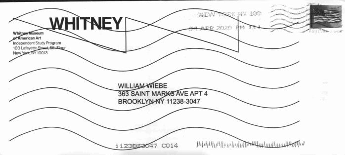
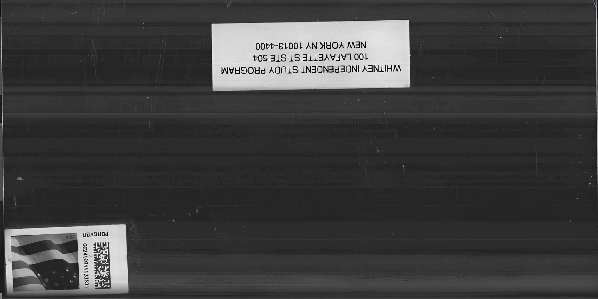
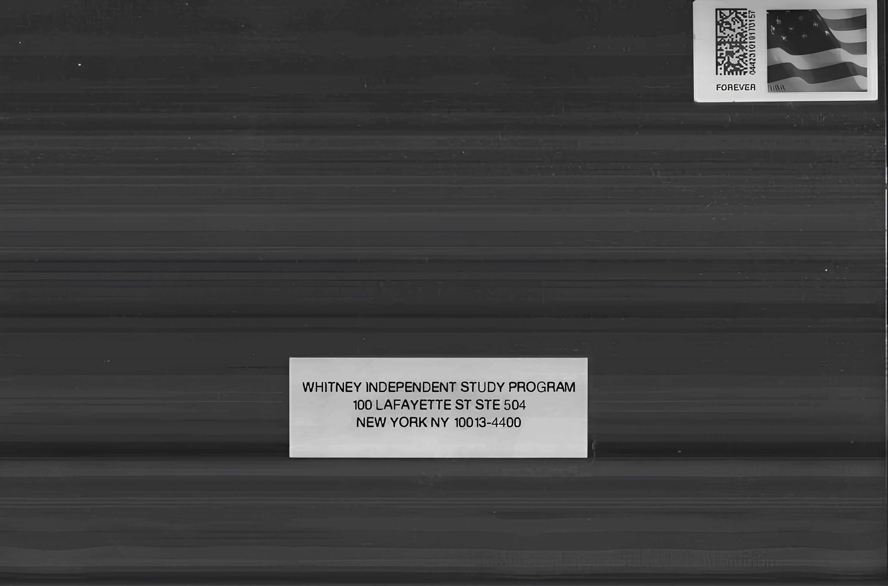
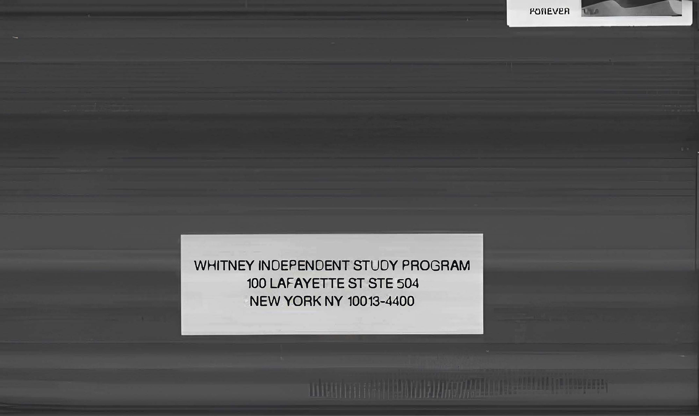
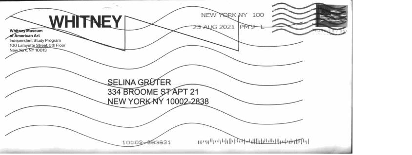
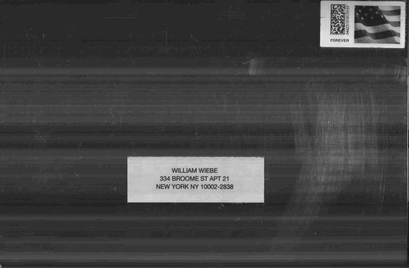

Taking Longer and Producing Less
Conjuncture, 2020
Elizabeth Foundation for the Arts, New York, NY
Taking Longer and Producing Less turns on a set of custom mail-order envelopes, collated into media objects by the United States Postal Service's universal mail imaging program. Inverting the practice of the "poor man's copyright," whereby one mails a copy of one's work to oneself to prove the date of an idea's conception, the data extracted by the imaging program becomes the intellectual property of USPS. Consumers may distribute this information only insofar as is necessary "to explain or effectuate a Postal Service transaction."
To overcome the prevailing model of information-as-a-service, the work enlists Postal Service transactions self-reflexively as instruments of distribution. When circulated in printed media, the work takes the form of an advertisement, disqualifying the media container from preferred media mail rates.
Support: Whitney Independent Study Program

 


